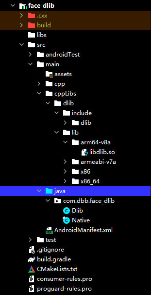
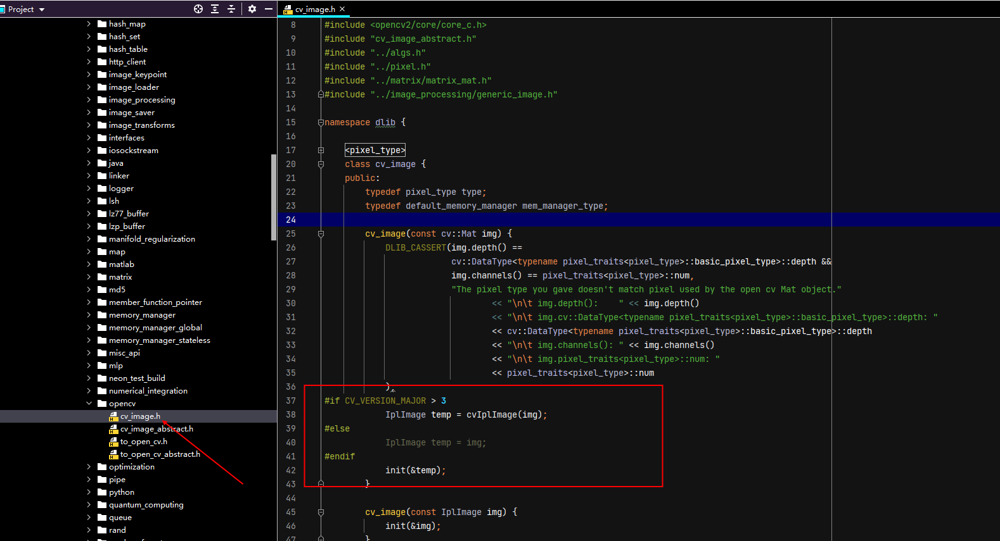
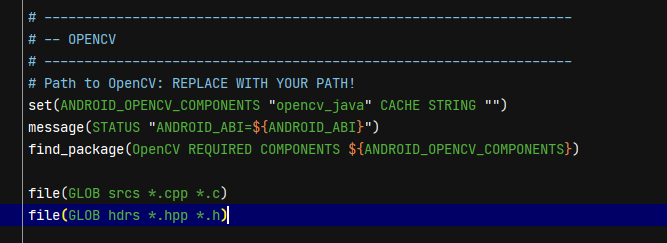
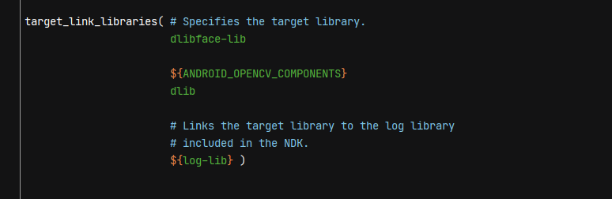
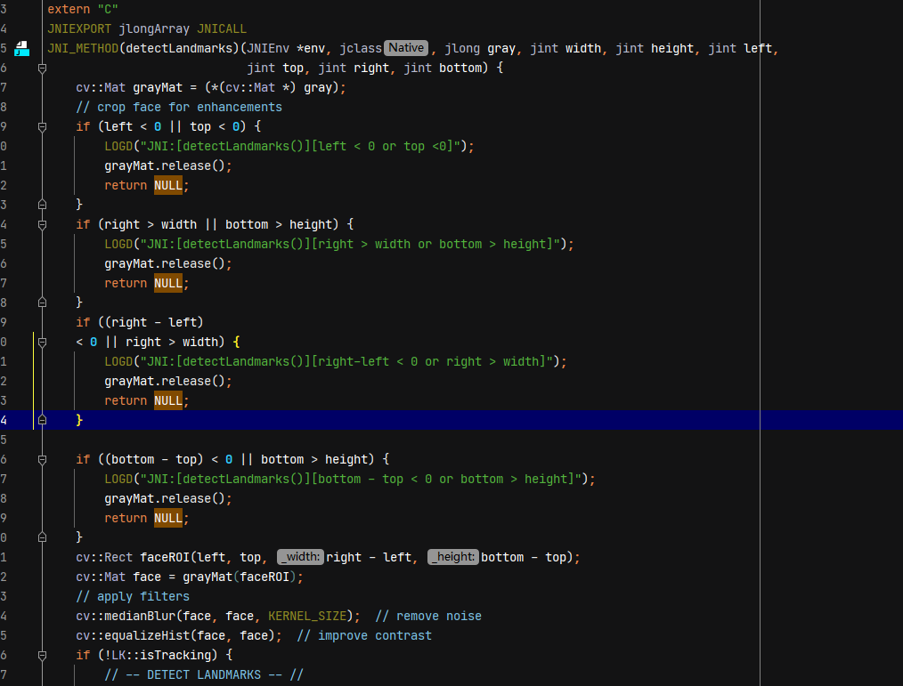

编译dlib For Android
1. Dlib基础
偶然看到dlib中有个模块可以对人脸进行68个标记,所以在github上寻找可以在Android平台使用的库。参照[Luca96/android-face-landmarks]已经实现，通过对编译脚本，JNI接口调整，以及对OpenCV 头文件依赖的版本修改，实现了将dlib 19.16 +OpenCV4.5.2整合，同时可以单独编译成library.

已实现工程结构如下：
,注意：此时asset工程未放入models文件。
models,在这里下载model文件导入后，运行。不同的model文件对应不同的位置的表姐。
2. Dlib依赖OpenCV库升级
原作者(Luca96)在编译基于dlib库生成dlibface-lib时，使用的OpenCV版本为4.0.1,由于我的Android工程使用的OpenCV SDK 版本为4.5.2，所以需要对face_dlib工程中，dlib的头文件基于OpenCV编写的头文件进行调整实现。
文件路径face_dlib/src/main/cppLibs/dlib/opencv/cv_image.h，此处调整的实现为OpenCV中Mat与IplImage转换，需要方法实现，老版本可以直接转。此文件中包含2处，均需要进行修改替换。

3. 调整Cmake构建脚本
原工程中的OpenCV依赖以及构建脚本为特定目录，此处借鉴OpenCV SDK中官方例子，进行调整（整个工程依赖唯一一个module OpenCV SDK)


4. 调整JNI方法实现
原实现JNI接口这里传入的yuvFrame,以及旋转角度等数据，我进行修改。传入的Mat的地址索引，旋转角度已经通过OpenCV.Core类进行了处理(人脸检测时已处理)，这里仅传入灰度数据即可。

5. 运行结果

其他：绿色标注为OpenCV Face Detector以及 FaceAlignmentSeeta
6. 参照
Luca96/android-face-landmarks,此博主提供了dlib编译交叉编译的步骤，由于我此时Ubuntu环境已破坏，所以直接使用了已经预编译的so文件。
dlib=models,支持多个model，应对不同的场景（鼻子，嘴巴）等
Luca96/dlib-for-android
本博客所有文章除特别声明外，均采用 CC BY-SA 4.0 协议 ，转载请注明出处！